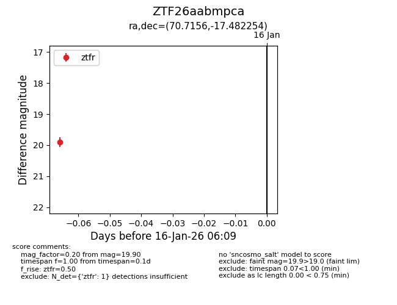
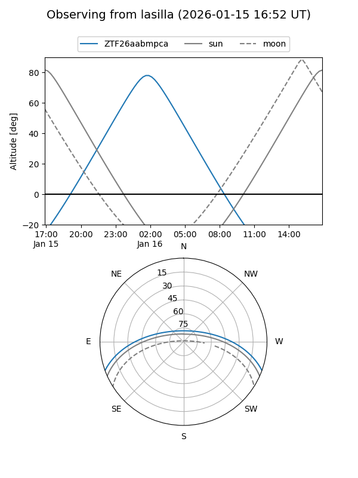
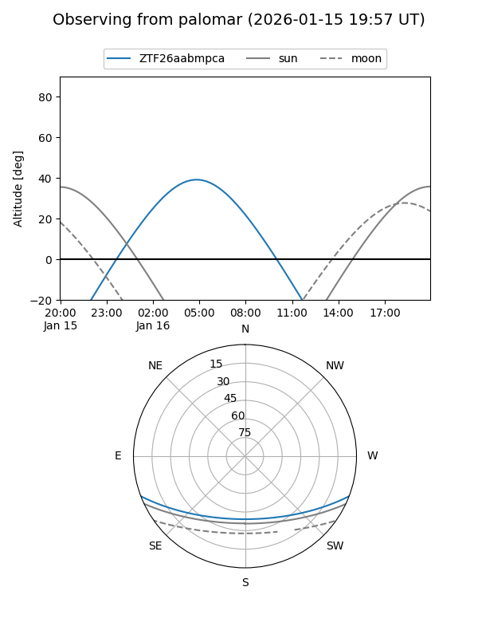

ZTF26aabmpca
Target ZTF26aabmpca at 2026-01-16 06:10
Aliases and brokers:
FINK: link
Lasair: link
ALeRCE: link
alt names
ZTF26aabmpca (ztf,fink_ztf)
Coordinates:
equatorial (ra, dec) = 70.7156,-17.48225
equatorial (HMS+DMS) = 04:42:51.74,-17:28:56.11
galactic (l, b) = (215.4816,-36.05960)
Flags:
Photometry:
last ztfr=19.90
1 ztfr detections
Lightcurve

Visibility


Additional plots